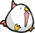
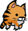
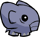
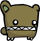
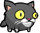
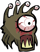
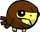

Castle Crashers Wiki
Pets
Os Animal Orbs, conhecidos por muitos jogadores como “pets”, são pequenos companheiros encontrados durante a aventura que oferecem diferentes bônus e vantagens ao personagem. Depois de desbloqueados, eles passam a acompanhar o jogador ao longo do jogo, fornecendo habilidades especiais ou melhorias nos atributos. Todos os Animal Orbs coletados ficam armazenados na Animal Ark, uma área especial onde o jogador pode escolher qual pet deseja utilizar. Depois que um pet é encontrado uma vez, ele permanece desbloqueado para todos os personagens do jogo. Além disso, após coletar um novo Animal Orb, o jogador pode sair da fase imediatamente sem precisar concluí-la inteira.
Pets

Frango
- Descrição: aumenta Força, Defesa e Agilidade.
- Efeito: força +1, defesa +1, Agilidade +1.
- Localização: em Medusa's Lair. Antes do Covil da Medusa haverá um lugar para cavar, lá você encontrará a Galinha.
- Necessário: pá.

Pata Arranhada
- Descrição: aumenta força e agilidade.
- Efeito: força +1, agilidade +2.
- Localização: em Sand Castle Interior. No início da fase haverá uma parede rachada, nela você usará 2 bombas. Atrás da parede estará Scratchpaw.
- Necessário: 2 bombas.

Focinho
- Descrição: aumenta a força.
- Efeito: força +2.
- Localização: em Cyclops' Fortress. Na parede rachada você usará 2 bombas e o Snoot estará logo trás.
- Necessário: 2 bombas.

Urso Robusto
- Descrição: aumenta força.
- Efeito: força +2.
- Localização: em Tall Grass Field. Você encontrará uma caverna bloqueada por uma pedra gigante. Use o sanduíche para remover a pedra e entre na caverna. Logo na entrada terá uma parede rachada, use 2 bombas para quebra-la e achará o Burly Bear.
- Necessário: 1 sanduíche e 2 bombas.

Meowburt
- Descrição: aumenta agilidade.
- Efeito: agilidade +3.
- Localização: em Parade. Após concluir Parade, saia da caverna e encontrará o Meowburt.
- Necessário:

Observador
- Descrição: aumenta magia.
- Efeito: magia +2.
- Localização: em Blacksmith entre em Animal Ark e no final da arca encontrará uma porta. Bata na porta com a espada e abrirá a porta.
- Necessário: Espada chave.
Cardeal
- Descrição: ajuda você a encontrar itens.
- Efeito: busca itens escondidos para você.
- Localização: Industrial Castle.
- Necessário:

Gavião
- Descrição: ataca inimigos caídos.
- Efeito: ataca inimigos recém caídos no chão e busca comida de inimigos recém mortos.
- Localização: em Tall Grass Field. No início da fase terá uma cabana com o símbolo do chifre, use e o Hawkster irá até você.
- Necessário: Trombeta.
Rammy
- Descrição: derruba os inimigos.
- Efeito: periodicamente derruba os inimigos no chão.
- Localização: em Tall Grass Field.
- Necessário: derrotar o chefe dos ursos.
Cara de Macaco
- Descrição: aumenta sua sorte para encontrar itens.
- Efeito: aumenta a chance de cair ouro, comida ou armas de inimigos.
- Localização: em Church Store. Você pode compra-lo com 350 moedas.
- Necessário:
Girafa
- Descrição: aumenta a experiência ganhada.
- Efeito: aumenta a experiência coletada em 10%.
- Localização: em Desert. No meio do deserto haverá um lugar para cavar, nele você encontrará Giraffey.
- Necessário: pá.